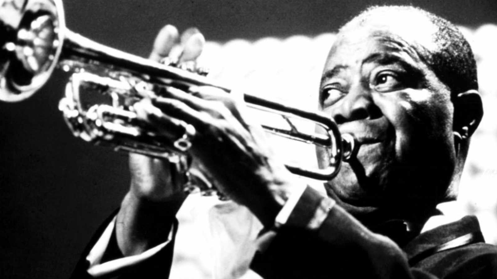

Louis Armstrong

What a wonderful world
...I see skies of blue
And clouds of white
The bright blessed day.
The dark sacred night
And I think to myself
What a wonderful world..
Nacimiento: Nueva Orleans, 4 de agosto de 1901n 3-Nueva York
Defunción: 6 de julio de 1971
También conocido como Satchmo o Pops, fue un trompetista y cantante estadounidense de jazz.